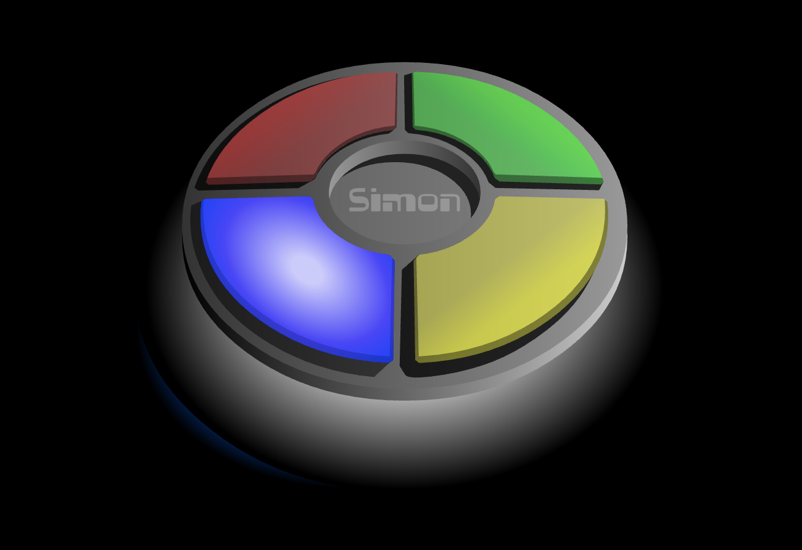

My Projects
Gmt Vid Call
• A video call application that allows users to join virtual meetings with video, audio, and screen sharing
functionalities. Built a real-time communication system using WebRTC. Designed the front-end using React to provide a seamless user experience. Deployed the application on Render, enabling users to join meetings from anywhere with a web browser.
platform.
• Technologies: React, Node.js, Express, MongoDB, WebRTC, Axios, CSS/HTML
visit site Learn more...
myAwayHome

• An innovative project aimed at transforming the way people find accommodation while traveling. Whether you’re
a traveler seeking a room or a homeowner looking to rent out your property, Homely Hub provides a seamless
platform.
• Technologies Used: React, MongoDB
Simon Game
 • Simon is a timeless game that offers a fun and engaging way to test and improve your memory skills. Whether you're looking to challenge yourself or compete with friends, Simon provides endless entertainment with its simple yet addictive gameplay.
• Technologies Used: HTML, CSS, JavaScript
Play Game Learn more...
Virtual Cricket
• Extensively used C++ classes for real-world entities like Player, Team, and Game.
• Implemented game dynamics using member functions and inter-object interactions.
• Utilized C++ standard libraries for functionalities like random number generation, input
validation, and data
management.
Drum Kit
click hereThe Drum Kit web application is a fun and interactive project that allows users to play virtual drum sounds using both mouse clicks and keyboard inputs. The project provides an engaging and visually appealing user interface, creating a virtual drum set that responds to user actions.
learn more...